치공구설계산업기사 (2012-08-26 기출문제)
1과목: 정밀가공학
1. 지름이 50mm인 연강 둥근봉을 20m/min의 절삭속도로 선반에서 가공할 때 주축의 회전수는 약 몇 rpm인가?
- 127
- 327
- 552
- 658
(정답률: 알수없음)

2. 일반적인 절삭 가공이론에서 절삭의 3분력이 아닌 것은?
- 주분력
- 배분력
- 이송분력
- 종단분력
(정답률: 알수없음)
3. 드릴링 머신에서 할 수 없는 작업은?
- 리밍
- 카운터 보링
- 버핑
- 카운터 싱킹
(정답률: 알수없음)
4. 연삭숫돌의 성능을 결정하는 5대 구성요소로 볼 수 없는 것은?
- 입도
- 강도
- 조직
- 결합제
(정답률: 알수없음)
5. 다음 중에서 선반으로 할 수 없는 작업은?
- T-홈 가공(T-Slotting)
- 릴리빙 가공(Relieving)
- 나사 절삭(Therading)
- 모방 절삭(Copying)
(정답률: 알수없음)
6. 절삭유제(cutting fluids)를 사용하는 목적으로 거리가 먼 것은?
- 냉각 작용
- 윤활 작용
- 칩의 제거 작용
- 동력 감소 작용
(정답률: 알수없음)
7. 밀링작업에서 브라운 샤프형 분할판을 사용하여 원주를 80등분 하고자 한다. 다음 중 가장 적합한 분할판의 구멍수는?
- 17
- 20
- 21
- 35
(정답률: 알수없음)
8. 밀링머신에서 사용할 수 있는 커터의 최대지름이 300mm, 최소지름은 20mm이다. 절삭 최저속도를 32m/min, 절삭 최대속도를 100m/min 일 경우, 이 밀링머신의 최대회전수는 약 몇 rpm 인가?
- 1321
- 1872
- 1430
- 1592
(정답률: 50%)
9. 전기도금의 반대현상으로 가공물을 양극(+)으로 하여 전해액속에서 전기를 통하면 전기에 의한 화학적인 작용으로 가공물의 표면이 용출되어 필요한 형상으로 가공하는 것은?
- 이온빔 가공(ion beam machining)
- 전해 연마(electrolytic polishing)
- 초음파 가공(ultrasonic machining)
- 에칭 가공(etching machining)
(정답률: 알수없음)
10. 구성인선(bulit up edge)의 방지대책으로 틀린 것은?
- 절삭속도를 크게 한다.
- 경사각(rake angle)을 크게 한다.
- 마찰계수가 큰 공구를 사용한다.
- 절삭 깊이를 적게 한다.
(정답률: 알수없음)
11. 절삭속도와 공구 수명과의 관계를 나타낸 Taylor 공구 수명식으로 맞는 것은? (단, V = 절삭속도(m/min), C = 상수, T = 공구수명(min), n = 지수이다.)
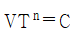
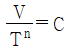
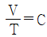
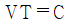
(정답률: 알수없음)
12. 래핑(Lapping)가공에 관한 특징 설명으로 틀린 것은?
- 가공면이 매끈한 거울면은 얻을 수 있다.
- 가공된 면은 윤활성 및 내마모성이 좋다.
- 가공이 쉬워서 숙련공이 아니어도 고도의 정밀가공이 가능하다.
- 평면도, 진원도, 진직도 등의 이상적인 기하학적 형상을 얻을 수 있다.
(정답률: 알수없음)
13. 숫돌에서 입자 사이에 칩이 끼어서 숫돌면을 평활하게 만들어 연삭이 잘 안되는 상태가 되는 것을 의미하는 용어는?
- 글레이징(glazing)
- 로딩(loading)
- 드레싱(dressing)
- 클리닝(cleaning)
(정답률: 알수없음)
14. 밀링 가공에서 지름 10cm의 공작물에 리드 60cm를 가지는 스파이럴(spiral) 가공을 할 때 이 가공물이 가지는 헬리컬 각도(α)는 약 몇 ° 인가?
- 15.4
- 19.8
- 24.7
- 27.6
(정답률: 알수없음)
15. 밀링머신의 부속장치 중 밀링커터를 고정하는 것은?
- 아버
- 컬럼
- 새들
- 니
(정답률: 알수없음)
16. 다음 중 숏 피닝 가공법과 가장 비슷한 가공법은?
- 호닝
- 샌드 블라스트
- 래핑
- 전해 연마
(정답률: 알수없음)
17. 절삭길이가 50cm 되는 봉을 1회 선반가공을 하는데 소요되는 시간은 약 몇 분인가? (단, 이 때 회전수는 800rpm 이고, 피드는 0.4mm/rev 로 한다.)
- 6.04분
- 4.55분
- 3.⑤분
- 1.56분
(정답률: 알수없음)
18. 연삭액의 구비조건으로 틀린 것은?
- 냉각성이 우수할 것
- 부식작용이 발생하지 않을 것
- 윤활성은 적고 유동성은 우수할 것
- 화학적으로 안정될 것
(정답률: 알수없음)
19. 브로칭 머신에서 절삭날의 길이에 따른 적절한 피치를 구하는 식으로 알맞은 것은? (단, p : 피치(pitch), L = 절삭날의 길이, C = 정수로서 1.5~2 정도)
- p = C · L1/3
- p = C · √L
- p = C · L
- p = C · L2
(정답률: 알수없음)
20. 다음 중 절삭가공에서 고속가공에 따른 장점에 해당하지 않는 것은?
- 가공시간의 단축
- 가공에 소요되는 에너지의 저감
- 표면거칠기 및 표면품질의 향상
- 절삭 공구의 수명 연장
(정답률: 알수없음)
2과목: 치공구설계
21. 클램핑 장치에 칩이 붙을 때는 클램핑력이 불안정하게 된다. 그 대책으로 잘못 설명된 것은?
- 위치결정면 부분을 되도록 넓게 한다.
- 클램핑 면은 수직면으로 한다.
- 볼트 등을 이용하여 항상 밀착하게 한다.
- 칩의 비산 방향에 클램프를 설치하지 않는다.
(정답률: 알수없음)
22. 주철제 공작물을 클램핑 시 마찰계수 μ=0.15, 쐐기각 7° 인 쐐기 클램프로 고정할 때 고정력은 쐐기를 끼우는 작용력의 약 몇 배가 되는가?
- 1.33
- 2.37
- 3.33
- 4.37
(정답률: 알수없음)
23. 다음 중 드릴지그를 구성하는 주요 3요소로 거리가 먼 것은?
- 드릴지그본체
- 위치결정장치
- 클램프
- 공구안내장치
(정답률: 알수없음)
24. 공기압 기술의 일반적인 특징에 대한 설명으로 거리가 먼 것은?
- 사용에너지(공기)를 쉽게 구할 수 있다.
- 에너지로서 저장성이 있다.
- 응답성이 비교적 떨어진다.
- 폭발과 인화의 위험이 크다.
(정답률: 알수없음)
25. 맞춤핀(dowel pin)에 대한 설명 중 틀린 것은?
- 지그와 고정구의 부품들을 정확한 위치에 결합시키기 위해 또는 제작 부품의 위치 결정을 위해 사용하는 등 광범위한 용도로 사용된다.
- 통상 조립을 원활하게 하기 위해 헐거운 끼워맞춤으로 제작된다.
- 취급 시 용이하고 안전하게 삽입시키기 위해 안내부의 끝에 약 5° ~ 15° 정도의 테이퍼를 부여한다.
- 핀이 전단하중을 받을 경우에는 하중을 받는 부분을 열처리 하여 사용하는 경우도 있다.
(정답률: 알수없음)
26. 공작물의 수량이 적거나 정밀도가 요구되지 않는 경우에 사용되며, 가장 경제적이고 단순하게 제작되는 지그는?
- 템플레이트 지그(template jig)
- 샌드위치 지그(sandwich jig)
- 리프 지그(leaf jig)
- 트러니언 지그(trunnion jig)
(정답률: 알수없음)
27. 다음 그림과 같은 체결장치에서 체결력(P)은 몇 kN인가? (단, 공작물을 고정하는 힘(Q)은 1.50kN, L1 = 100mm, L2 = 50mm 이다.)
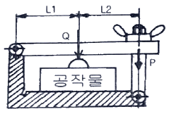
- 0.5 kN
- 0.75 kN
- 1 kN
- 1.5 kN
(정답률: 알수없음)
28. 드릴 작업용 부시가 공작물과 가까울수록 나타나는 현상으로 옳은 것은?
- 부시 마모가 잘 발생하지 않으나, 가공정밀도는 저하된다.
- 부시 마모가 잘 발생하지 않고, 가공정밀도도 향상된다.
- 부시 마모가 잘 발생하고, 가공정밀도도 저하된다.
- 부시 마모가 잘 발새아나, 가공정밀도는 향상된다.
(정답률: 알수없음)
29. 유압 단로드 실린더의 내경이 ø150mm이고, 작용 압력이 9.81MPa, 로드 직경이 ø30mm일 때 피스톤이 후퇴(후진)할 때 발생하는 힘은 약 몇 kN 인가? (단, 마찰손실은 무시한다.)
- 166.4
- 332.8
- 173.6
- 346.7
(정답률: 알수없음)
30. 다품종 소량 생산에서 생산성 향상을 높이기 위해서 개발된 고정구(fixture)는?
- Vise-jaw fixture
- Multistatiion fixture
- Modular flexible jig & fixture
- Profiling fixture
(정답률: 알수없음)
31. 다음 공유압 기호의 명칭은 무엇인가?
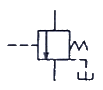
- 시퀀스 밸브
- 감압 밸브
- 무부하 밸브
- 릴리프 밸브
(정답률: 알수없음)
32. 보링 작업 시 보링 바의 떨림이 발생할 경우 여러 가지 문제가 발생할 수 있다. 다음 중 보링 바의 떨림 원인으로 거리가 먼 것은?
- 바이트 돌출이 작을 경우
- 절삭 깊이가 크거나 이송이 빠를 경우
- 보링 바의 강성이 부족할 경우
- 공작물의 클램핑이 불확실한 경우
(정답률: 알수없음)
33. 나사 클램프(screw clamp)의 설명으로 틀린 것은?
- 클램핑 기구로서 광범위하게 많이 사용된다.
- 설계가 간단하고 제작비가 싸다.
- 리드각이 큰 나사를 사용하면 급속 클램핑이 되어 잘 풀리지 않는다.
- 클램핑(clamping) 동작이 느리다.
(정답률: 알수없음)
34. 기계적 관리를 위하여 적절한 고정력을 주고자 할 때 그에 관한 설명으로 틀린 것은?
- 고정력은 위치결정구 바로 반대편에 배치하도록 한다.
- 고정력에 의한 휨이 발생할 경우 지지구를 사용하여야 한다.
- 강성이 작은 공작물일수록 고정력을 분산하지 말고 하나의 큰 힘으로 고정력을 가하도록 한다.
- 공작물에 생기는 자국은 중요하지 않은 표면에 고정력을 가하여 제한할 수 있다.
(정답률: 알수없음)
35. 유압 장치와 비교하여 공기압 장치가 가진 장점은?
- 위치 및 속도 제어성이 좋다.
- 응답성이 빠르다.
- 큰 출력을 얻을 수 있다.
- 폭발과 인화의 위험이 없다.
(정답률: 알수없음)
36. 제품도의 공차를 축소하면 나타나는 결과로 가장 타당한 것은?
- 불량품 발생 증가
- 생산성 향상
- 제품의 질 저하
- 원가절감
(정답률: 30%)
37. 그림과 같이 높이가 지름보다 작은 낮은 원기둥의 위치 결정구를 정확히 잘 설정한 것은?
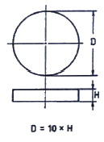
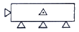
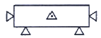
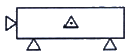
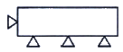
(정답률: 알수없음)
38. 위치결정구에 대한 일반적인 주의사항으로 틀린 것은?
- 위치결정구의 윗면은 칩이나 먼지에 의한 영향이 없도록 공작물로 덮도록 한다.
- 위치결정구의 설치는 가능한 가깝게 설치하고 절삭력이나 클램핑력은 위치결정구에서 되도록 떨어진 곳에 작용하도록 한다.
- 위치결정구는 마모가 있을 수 있으므로 교환이 가능한 구조로 한다.
- 서로 교차하는 2면으로 위치결정을 할 경우 교선 부분에 칩 흠을 만든다.
(정답률: 알수없음)
39. 하나의 가공위치에 여러 작업이 요구되거나 드릴링, 리밍, 탭핑 등의 연속작업이 요구되는 지그에서 다음 중 어떤 형태의 부시를 사용하는 것이 가장 좋은가?
- 고정 부시
- 라이너 부시
- 회전삽입 부시
- 고장삽입 부시
(정답률: 알수없음)
40. 용접 고정구 설계 및 제작 시 유의사항으로 틀린 것은?
- 고정구의 구조와 클램핑 방법은 공작물의 장착과 탈착이 용이해야 한다.
- 제작비용을 고려하여 경제적으로 설계 및 제작한다.
- 가용접과 본용접 둘 다 수행할 수 있도록 제작한다.
- 공작물의 위치결정 및 클램핑 위치 설정은 공작물의 잔류 응력과 균열을 고려해야 한다.
(정답률: 알수없음)
3과목: 치공구재료 및 정밀계측
41. 탄소강의 함유 원소 중 고온가공 시 적열취성을 일으켜 가공을 곤란하게 하는 것은?
- 망간(Mn)
- 황(S)
- 규소(Si)
- 인(P)
(정답률: 알수없음)
42. 인장시험에서 시편의 표점거리를 110mm, 지름 13mm, 최대 하중 3250N에서 시편이 절단되었다면 인장강도는 약 몇 N/mm2 인가? (단, 시편 절단 전후의 길이 변형량 △l은 20mm 이다.)
- 18
- 24
- 32
- 40
(정답률: 알수없음)
43. 다음 중 풀림 처리의 주목적으로 맞는 것은?
- 잔류 응력 제거
- 내식성 향상
- 경도의 증가
- 표면의 경화
(정답률: 알수없음)
44. 다음 공구재료 종류 중 가장 경도가 크고 내마모성이 크며 절삭속도가 빠르고 능률적인 절삭공구 재료는?
- 합금공구강
- 고속도강
- 스테인리스강
- 다이아몬드
(정답률: 알수없음)
45. Al2O3 분말을 주성분으로 하며 고온경도, 내마모성, 내열성은 우수하나 충격에 약한 공구재료는?
- 세라믹
- 다이아몬드
- 초경합금
- 고속도강
(정답률: 알수없음)
46. 오스테나이트 조직의 Mn-강인 하드필드(hardfield) 강은 고온에서 취성이 생기기 쉬운데 이를 방지하기 위해 주로 사용되는 열처리 법은?
- 뜨임(tempering)
- 수인법(water toughing)
- 알루마이트(alumite)법
- 오스템퍼링(austempering)
(정답률: 알수없음)
47. 니켈의 특징에 관한 설명으로 틀린 것은?
- 강도 및 경도가 크다.
- 단접, 용접을 할 수 있다.
- 공기, 해수 중에서 내식성이 크며, 염산에도 상당한 저항력이 있다.
- 상온에서는 비자성체이나, 358℃ 부근에서 자기변태로 인해 자성을 띤다.
(정답률: 알수없음)
48. 다음 강의 담금질 조직 중 경도가 가장 높은 조직은?
- 마텐자이트
- 트루스타이트
- 소르바이트
- 오스테나이트
(정답률: 알수없음)
49. 각종 공업재료로 사용되는 합성수지 중 열경화성 수지가 아닌 것은?
- 페놀 수지
- 요소 소지
- 아크릴 수지
- 멜라민 수지
(정답률: 알수없음)
50. 다음 중 치공구의 본체 재질로 가장 많이 사용되는 것은?
- 주철
- 탄소 공구강
- 세라믹
- 초경합금
(정답률: 알수없음)
51. 30 H7의 구멍을 가공하는데 사용되는 공작용 plug gage에서 정지측 설계 치수는? (단, 30H7 =
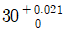
, 게이지 제작공차 = 0.004, 마모여유 = 0.002 이다.)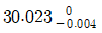
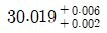
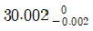
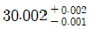
(정답률: 알수없음)
52. 최근에 비교측정기로 널리 사용되는 전기마이크로미터의 장단점에 대한 설명으로 틀린 것은?
- 전기적 신호이므로 컴퓨터 처리가 용이하다.
- 측정부의 지시범위가 매우 짧은 편이다.
- 기계적 확대 기구를 사용하징 않기 때문에 되돌림 오차가 아주 작다.
- 전기적 노이즈가 있을 경우에 측정값에 영향을 준다.
(정답률: 알수없음)
53. 마이크로미터 측정면의 평면도 검사기기로 가장 적합한 것은?
- 미니 미터
- 오토콜리메이터
- 옵티컬 플랫
- 서피스 플레이트
(정답률: 알수없음)
54. 다이얼게이지와 V블록에 의한 진원도 측정법은?
- 직경법
- 3점법
- 촉침법
- 반경법
(정답률: 알수없음)
55. 3차원 측정기의 정밀도 시험 항목으로 거리가 먼 것은?
- 각 축의 측정 정밀도
- 공간의 측정 정밀도
- 엔코더의 정밀도
- 진직도
(정답률: 알수없음)
56. 공구현미경의 부속품 중 둥근봉, 나사, 호브 등을 관측하는 경우 그 센터 또는 센터구멍에 의해 피측정물을 지지하기 위한 것으로 그 중심축을 수평 위치로 맞추고 또한 경사시킬 수 있는 장치는?
- 중심 맞추기 테이블
- 나이프 에지(knife edge)
- 광학적 접촉자
- 중심 지지대
(정답률: 알수없음)
57. 나사의 유효지름을 측정하는 마이크로미터는?
- 포인트 마이크로미터(Point micrometer)
- V-앤빌 마이크로미터(V-anvil micrometer)
- 삼점식 마이크로미터(3-point micrometer)
- 나사 마이크로미터(Thread micrometer)
(정답률: 알수없음)
58. 중림면에 눈금을 만든 눈금자를 지지할 때 사용되는 베셀점 중 하나로 눈금면에 따라 측정한 거리와 눈금선 사이의 직선거리와의 차가 최소가 되는 a는? (단, l은 표준자의 길이이다.)
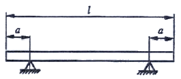
- 0.2113 l
- 0.2232 l
- 0.2203 l
- 0.2386 l
(정답률: 알수없음)
59. 다음 중 “측정불확도” 의 설명으로 가장 올바른 것은?
- 정해진 조건하에서 명시된 기기불확도를 가진 주어진 측정기기 또는 측정시스템으로 측정될 수 있는 일련의 같은 종류의 양의 값
- 계통오차의 추정값
- 반복 측정에서 예측할 수 없이 변하는 측정오차의 성분
- 사용된 정보를 기초로 하여, 측정량에 대한 측정값의 분산 특성을 나타내는 음이 아닌 파라미터
(정답률: 알수없음)
60. 생산현장에 사용하고 있는 게이지의 이상유무와 사용중의 마모량을 확인하기 위해서 사용하는 게이지는?
- 검사용 게이지
- 공작용 게이지
- 점검용 게이지
- 기준 게이지
(정답률: 알수없음)
4과목: 기계공정설계
61. 제조 공정 선정 시에 고려할 주요사항으로 틀린 것은?
- 일일 생산량을 충족시킬 수 있어야 한다.
- 공정은 제품설계의 변경에 적응할 수 있도록 하며 공정 자체의 변경을 받아드릴수 있어야 한다.
- 단기간에 상환해야 하는 경비의 지출은 가능한 높이고, 장기간에 걸쳐 상환해야 하는 경비의 지출을 가능한 낮추어야 한다.
- 최종 제품이 기업에 이익이 돌아오도록 최소한의 비용으로 생산될 수 있도록 전개되어야 한다.
(정답률: 알수없음)
62. 다음 중 공구 홀더와 공작물 홀더 역할로 비교하고자 할 때, 공작물 홀더로만 사용되는 것은?
- 척(chuck)
- 콜릿(collet)
- 아버(arbor)
- 맨드릴(mandrel)
(정답률: 알수없음)
63. 공정치수(processing dimension)에 대한 설명 중 틀린 것은?
- 공정설계자가 결정한 치수로서 부품도에는 나타나 있지 않다.
- 공정 총괄표나 공정도상의 치수는 제품도상의 치수 또는 공정치수가 될 수 있다.
- 다듬질 가공 후에 나타나는 치수가 공정치수이고, 황삭가공 후에 나타나는 치수가 제품치수이다.
- 컵을 제작하기 위한 블랭크(blank)의 직경은 공정치수가 된다.
(정답률: 알수없음)
64. 다음 보기들의 내용 중 전용장비의 대비한 범용장비의 장점을 나타낸 것을 모두 고른 것은?
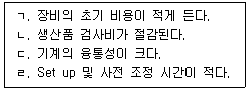
- ㄱ, ㄴ
- ㄱ, ㄴ, ㄷ
- ㄱ, ㄷ, ㄹ
- ㄷ, ㄹ
(정답률: 알수없음)
65. 공정설계에 사용되는 용어 중 규격(specilfication)에 대한 설명으로 가장 적합한 것은?
- 가공된 치수와 표면에 따라서 공작물, 위치고정구 및 클램프 등을 나타내는 작업의 스케치도이다.
- 모든 치수, 기호, 설명 또는 부품도에 나타내고 싶은 기타 방법 등을 서술하는데 사용하는 일반적인 용어이다.
- 부품 또는 조립품을 만드는데 필요한 작업의 순서와 시설을 나타내는 기본도를 나타낸다.
- 공작물의 형상을 가공하거나 운반하는데 사용하는 기계기구설비를 나타낸다.
(정답률: 알수없음)
66. 일반 제조공정을 절삭, 성형, 조립공정으로 분류할 때, 절삭공정이 아닌 것은?
- 스웨이징(swaging)
- 드릴링(drilling)
- 밀링(milling)
- 선삭(turning)
(정답률: 알수없음)
67. 공작물의 기능해결을 위한 기계 가공면을 결정할 때의 중요 분석내용이 아닌 것은?
- 표면 거칠기
- 공차
- 제품의 단가
- 기하학적인 형상
(정답률: 알수없음)
68. 다음 중 주공정(Principal Process Operation)에 해당하지 않는 것은?
- 절삭
- 숏 피닝
- 성형
- 몰딩
(정답률: 알수없음)
69. 공정 설계 시 고려하여야 할 여러 공작물에서 나타나는 불규칙 형상 중 플라스틱 몰딩에 나타나는 것과 거리가 먼 것은?
- 게이트(Gate)
- 플래시(Flash)
- 이젝터 핀(Ejector pin) 자국
- 스프링 백(Spring Back)
(정답률: 알수없음)
70. 공작물의 변위 발생요소로 거리가 먼 것은?
- 측정에 따른 치수변화
- 작업자의 숙련도에 따른 치수변화
- 공구의 무디어짐에 따른 치수변화
- 공작물의 중량에 따른 치수변화
(정답률: 알수없음)
71. 재료의 경제적 이용에 관해 고려할 사항으로 거리가 먼 것은?
- 자재관리를 통한 재료의 효율적 활용
- 파쇠(scrap)의 판매
- 목표 성능 변경을 통한 원가 절감
- 재사용 가능한 재료 활용
(정답률: 알수없음)
72. 공정설계 시 장비를 선탁할 때 설계요소 측면에서 고려해야 할 사항으로 거리가 먼 것은?
- 정밀도
- 생산성
- 윤활방법
- 외관
(정답률: 알수없음)
73. 그림에서 X의 치수가 15±0.03로 요구된다면 Y의 치수는 어떻게 되는가?
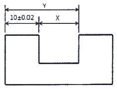
- 25±0.01
- 25±0.02
- 25±0.03
- 25±0.⑤
(정답률: 알수없음)
74. 공작물의 형상관리 중 기계적 관리가 갖추어야할 조건이 아닌 것은?
- 공작물에 절삭력이 가해질 경우 공작물의 휨이 일어나지 않을 것
- 공작물이 공구력에 의해 위치결정구로부터 쉽게 이탈되도록 할 것
- 자중에 의한 공작물의 휨이 발생하지 않을 것
- 공작물에 고정력이 가해질 때 모든 위치결정구와 접촉하게 할 것
(정답률: 알수없음)
75. 공작물 관리 중 공작물에 절삭력이 작용할 때 공작물과 공구의 위치관계를 유지시키기 위한 관리는?
- 형상 관리
- 기계적 관리
- 치수 관리
- 중심선 관리
(정답률: 알수없음)
76. 다음 중 공작물의 다듬질(finishing) 공정에 해당하지 않는 것은?
- 세척(cleaning)
- 폴리싱(polishing)
- 버핑(buffing)
- 스웨이징(swaging)
(정답률: 알수없음)
77. 도면의 치수 중에서
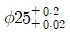
를 공정전개에서 사용될 양측공차로 변경할 때 옳은 것은?- ø25.20±0.09
- ø25.11±0.09
- ø25.02±0.02
- ø25.11±0.04
(정답률: 알수없음)
78. 다음 중 공차누적을 방지하는 방법으로서 적절하지 못한 것은?
- 기준선 치수방식에 의한 관계치수 표기
- 공정순서의 적절한 선정
- 공정에 따른 공차도표(Tolerance Chart)작성 및 검토
- 제품공차의 확대
(정답률: 알수없음)
79. 공정도가 제공해 주는 장점으로 볼 수 없는 것은?
- 제품의 기본적인 목표 성능을 개선하는데 도움을 준다.
- 미 가공된 표면에 위치결정구를 배치하는 것을 피할 수 있다.
- 공정의 복합이나 공정의 자동화에 도움이 된다.
- 위치결정구를 결정하는데 도움을 준다.
(정답률: 알수없음)
80. 공정도에 사용되는 기호 는 무엇을 표시하는 기호인가?
- 가공되는 표면
- 재료의 첨가 또는 제거
- 조정식 지지구
- 고정식 지지구
(정답률: 알수없음)
1. 둘레속도 = 지름 × π × 회전수
2. 회전수 = 둘레속도 ÷ (지름 × π)
따라서, 주어진 조건에서 둘레속도는 다음과 같다.
둘레속도 = 지름 × π × 절단속도
= 50mm × 3.14 × 20m/min
= 3140mm/min
따라서, 주축의 회전수는 다음과 같다.
회전수 = 3140mm/min ÷ (50mm × 3.14)
≈ 63.2rpm
하지만, 이 문제에서는 정답이 "127"이다. 이는 주축의 회전수를 계산할 때, 선반의 스프린드르 고려하지 않았기 때문이다. 스프린드는 선반의 회전을 안정적으로 유지하기 위한 장치로, 실제로는 선반의 회전수가 주축의 회전수보다 높아지게 된다. 따라서, 이 문제에서는 스프린드 효과를 고려하여 주축의 회전수를 2배로 높여서 계산해야 한다.
즉, 실제 주축의 회전수는 다음과 같다.
실제 회전수 = 계산된 회전수 × 2
≈ 63.2rpm × 2
≈ 127rpm
따라서, 정답은 "127"이 된다.